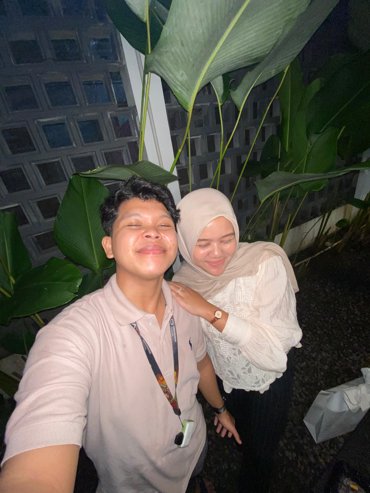
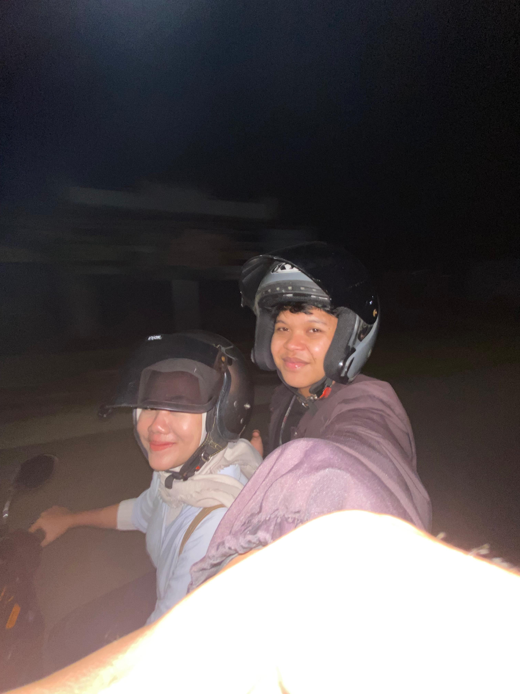
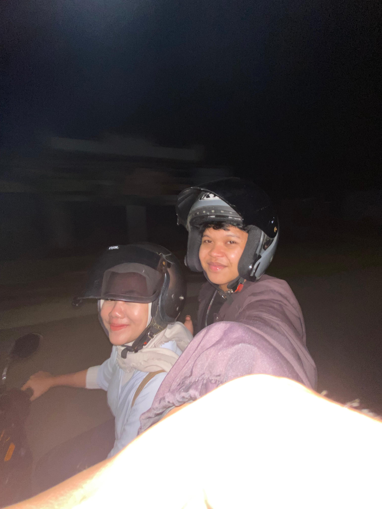
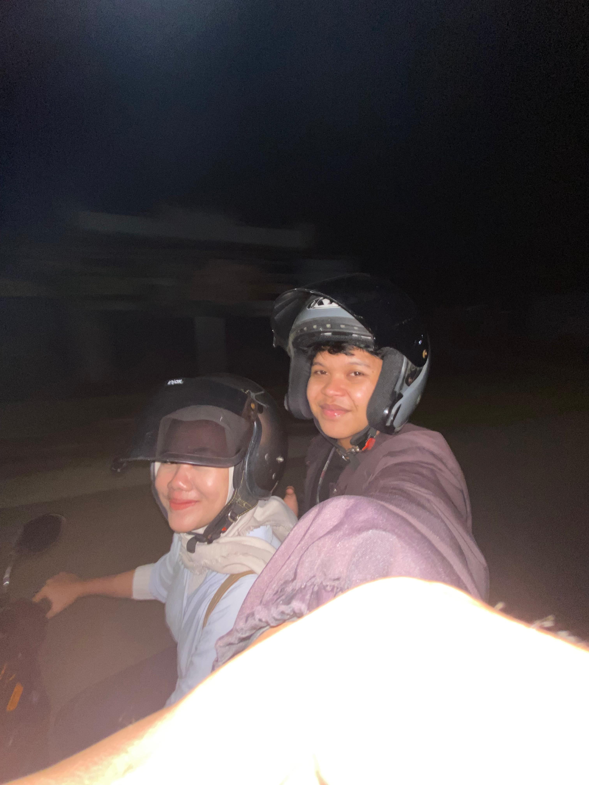
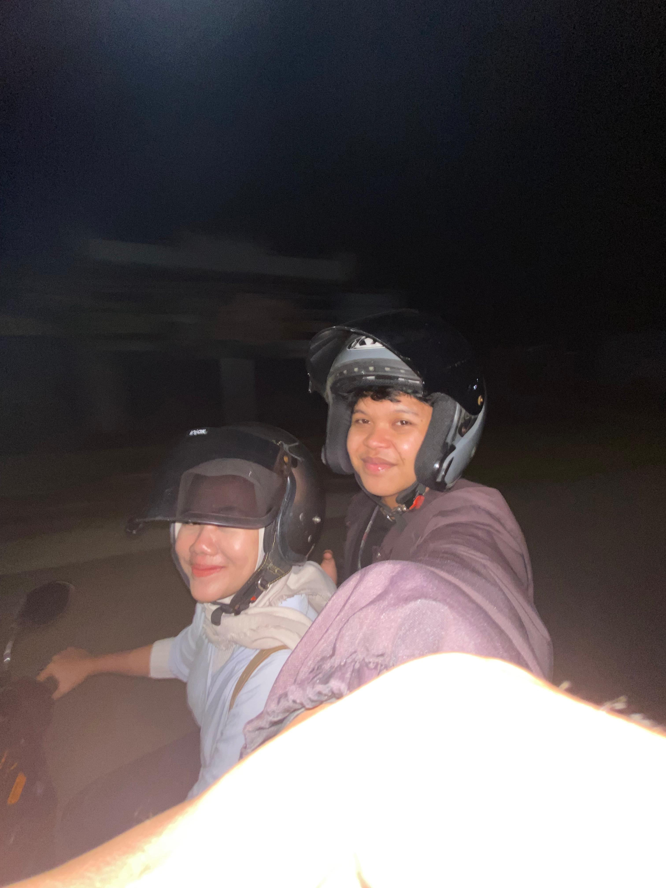

Momen-Momen Kita 📸

 


Adam & Rahma - 2 to 10/married
Sayang, di setiap detik yang kita lewati bersama, aku menemukan alasan baru untuk jatuh cinta padamu.
Senyummu adalah pelita di setiap hariku, dan cintamu adalah pelukan hangat di tengah dunia yang dingin.
Hari ini, di hari jadi kita, aku ingin kau tahu bahwa tak ada tempat yang lebih indah daripada berada di sampingmu.
Aku bersyukur dipertemukan denganmu — wanita luar biasa yang selalu sabar, hangat, dan penuh cinta.
Mari kita ukir lebih banyak cerita, lebih banyak tawa, dan cinta yang tak akan pernah pudar.
Terima kasih karena telah mencintaiku. Aku janji, akan selalu berusaha menjadi yang terbaik untukmu.
Selamat anniversary, cinta. Aku mencintaimu, sekarang dan selamanya. 💖
